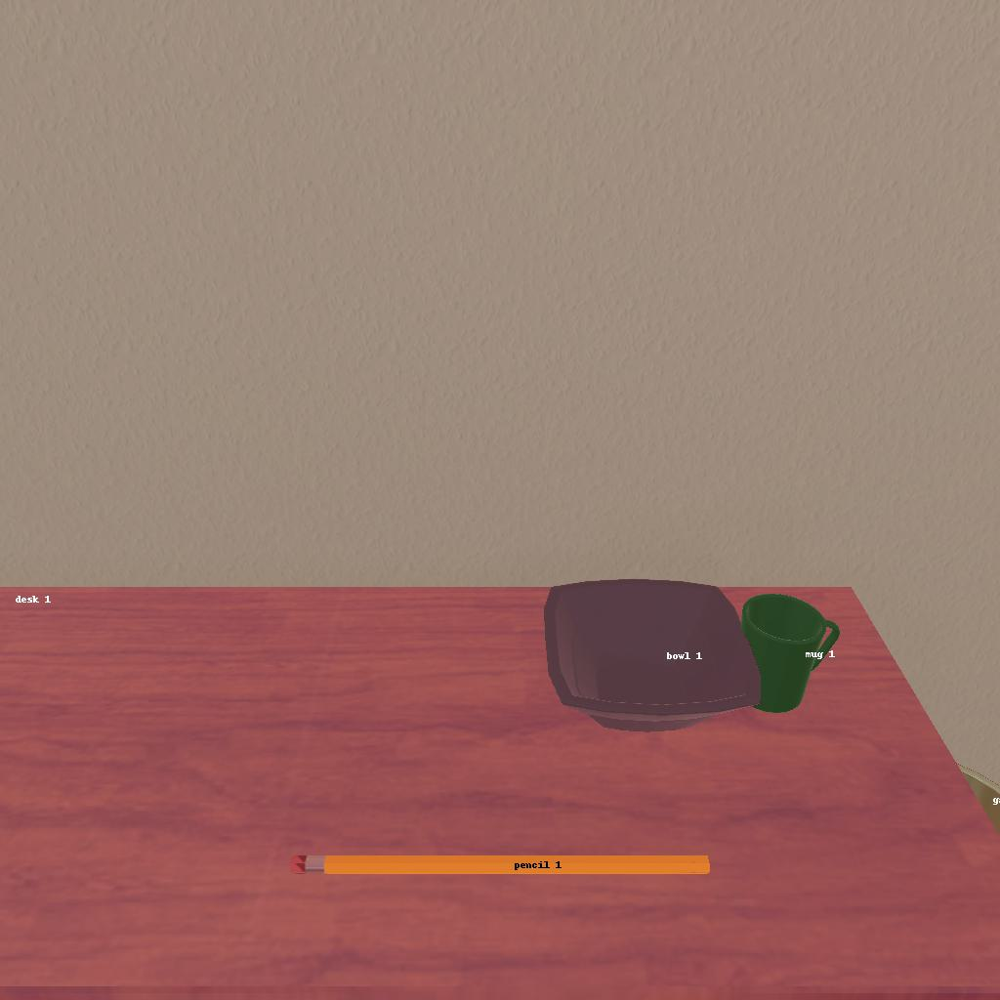
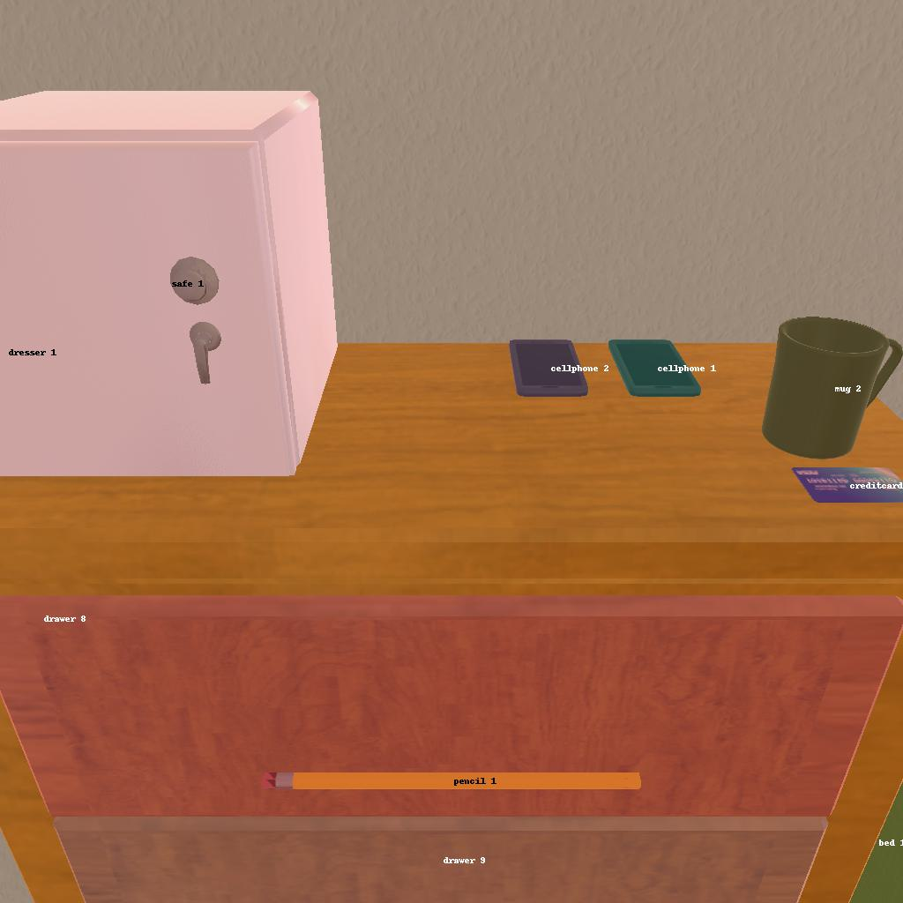

---------------------------------------------------------task: 2---------------------------------------------------------
--------------------------------------------------------------------------------------------------------------------------------------------------------------------
--------------------------------------------------------------------------------------------------------------------------------------------------------------------
Step:--------------------------------------------------------------------------8-------------------------------------------------------------------------------
----------------------------------------
VLM Prompt:
Image1:
Image2:
**Instruction**
1. Analyze the provided image to identify all visible household objects, focusing on those relevant to the task description "examine the pen with the desklamp."
2. Use the analysis of the image and the task hint "The agent must find an object of the desired type, locate and turn on a light source with the desired object in-hand." to answer the question: what is the most reasonable action in the choices for the task description "examine the pen with the desklamp"?
4. Decide and write the answer using the template: The answer is: (i): , where i is the real number. If there is no desired object in the image, search every place based on **Initial Observation** to find the object. And if no one is exactly correct, choose a similar answer.
**Initial Observation**
You are in the middle of a room. Looking quickly around you, you can see bed (1-2), dresser (1), drawer (1-11), sidetable (1-2), desk (1), garbagecan (1), safe (1)
**Answer Choices**
(1): go to bed 1
(2): go to bed 2
(3): go to drawer 1
(4): go to sidetable 1
(5): go to drawer 2
(6): go to sidetable 2
(7): go to drawer 3
(8): go to drawer 4
(9): go to desk 1
(10): go to garbagecan 1
(11): go to drawer 5
(12): go to drawer 6
(13): go to drawer 7
(14): go to drawer 8
(15): go to drawer 9
(16): go to drawer 10
(17): go to drawer 11
(18): go to safe 1
(19): put pencil 1 in/on dresser 1
(20): examine pencil 1
(21): examine dresser 1
**Answer**
Let's think step by step by following the instructions.
----------------------------------------
----------------------------------------
Original Response:
1. Analyzing Image1 and Image2, we can see that there is no "pen" visible in either image. However, there is a "pencil 1" on the desk 1 in both images. Since "pen" and "pencil" are similar writing instruments, we can assume that the task might refer to "pencil 1" for the purpose of this question, as no "pen" is observed. There is no "desklamp" visible in either image.
2. Based on the task hint, the agent must find the desired object, which we are assuming to be "pencil 1" for this exercise. There is no "desklamp" visible, so we cannot complete the task of examining the pencil with the desklamp, but we can still perform an action that brings us closer to the goal.
The most reasonable action from the choices provided, based on the task description and initial observations, would be to first secure the pencil since it is the object we need for examination. After obtaining the object, we would then look for a desklamp or light source, which is not provided in the answer choices but could potentially be found by searching the room further.
The answer is: (9): go to desk 1
----------------------------------------
----------------------------------------
>>> Refine Original VLM Response and Get Pure Action: go to desk 1
----------------------------------------
-----------------------------------------------------------------
Running time: 10.845125436782837 seconds
Total Money: 0.8478400000000001
-----------------------------------------------------------------
-----------------------------------------------------------------
Text Observation:You arrive at loc 9. On the desk 1, you see a bowl 1, and a mug 1.
-----------------------------------------------------------------
UNSUCCEED